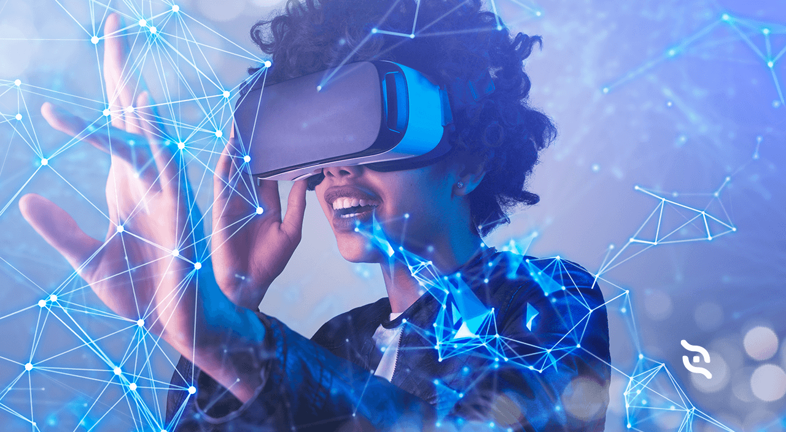
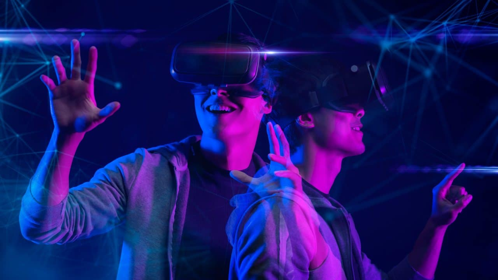

A realidade aumentada não é exatamente uma novidade mas, recentemente, tem se tornado um trend topic dos assuntos tecnológicos. Esta tecnologia sobrepõe informações digitais - imagens, sons, textos - ao mundo real, à visão de seus usuários, de maneira a criar imagens compostas. O que, vale salientar, é diferente da realidade virtual. Esta se trata de uma tecnologia que cria ambientes virtuais nos quais o usuário imerge e com os quais interage. Já a realidade aumentada, cuja sigla é AR, trata de alterar a realidade ao redor do usuário, tornando-a diferente, adicionando à ela elementos digitais em vez de substituí-la por outra completamente digital.
Realidade aumentada é a integração de elementos ou informações virtuais com elementos do mundo real através de uma câmera. Um dos usos mais conhecidos da realidade aumentada são os filtros para fotos em redes sociais e games como o Pokémon GO e o Minecraft Earth
Para inserir elementos virtuais no mundo real, a tecnologia exige um marcador, que pode ser uma imagem, um espaço plano ou elementos mais complexos. Assim, é possível utilizar esta marcação para que o elemento virtual seja devidamente inserido na imagem capturada pela câmera.
Diferentemente da realidade virtual (VR), que requer o uso de óculos específicos e faz com que os usuários sintam-se parte do ambiente, a realidade aumentada pode ser acessada diretamente no seu celular por uma série de apps
Lançado em julho de 2016, Pokémon GO (Android | iOS) leva a experiência de ser um mestre Pokémon bastante a sério. O game incentiva os jogadores a saírem às ruas para caçar novos monstrinhos, treiná-los e obter novos itens para evoluí-los.
Você pode utilizar a experiência de realidade aumentada para caçar e capturar os Pokémon que aparecem na sua região.
Atualmente, muitos apps estão incorporando esta tecnologia no processo de ensino e aprendizagem. O BBC Civilizations AR (Android | iOS) permite que os usuários visualizem, rotacionem e redimensionem inúmeros artefatos históricos usando a tecnologia AR..

Ao pesquisar por algum animal no Google, é possível utilizar a opção “Veja em 3D” para que você visualize este animal em realidade aumentada usando a câmera do seu celular..
O recurso conta com diversos animais em seu catálogo e, recentemente, a ferramenta passou a permitir que os usuários visualizem modelos tridimensionais de dinossauros.